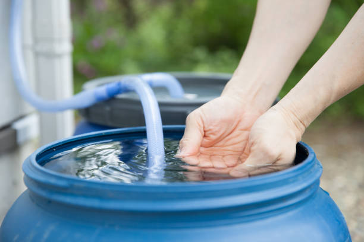

AquaConecta es una plataforma inteligente con tecnología IoT que revoluciona el acceso al agua potable, conectando proveedores con comunidades sin suministro constante, permitiendo monitorear en tiempo real la calidad y cantidad del agua disponible.

Con AquaConecta, los usuarios pueden monitorear la calidad y cantidad de agua en sus hogares, mientras que los proveedores optimizan sus operaciones y mejoran la trazabilidad en la distribución.
Supervisa la cantidad y calidad del agua disponible en tu hogar desde cualquier dispositivo con sensores IoT instalados en tus tanques.
Recibe notificaciones automáticas cuando el nivel de agua está bajo o si la calidad se ve comprometida.
Los proveedores pueden coordinar eficientemente las entregas, priorizar zonas críticas y optimizar sus recorridos con datos en tiempo real.
Control preciso del volumen disponible y planificación de la distribución basada en datos reales para una gestión más equitativa.
Nuestra plataforma beneficia tanto a usuarios finales como a proveedores de agua
Toma el control de tu suministro de agua y mejora tu calidad de vida en zonas donde solo el 13.3% de los hogares cuentan con suministro continuo.
Optimiza tus operaciones y mejora la trazabilidad en la distribución de agua con nuestras herramientas especializadas basadas en IoT.
En regiones como Ica y Chincha, miles de familias enfrentan una grave crisis de acceso al agua potable
AquaConecta utiliza sensores IoT instalados en tanques domésticos para:
Conoce los planes y servicios que ofrecemos para garantizar tu acceso al agua
S/ 258
por cada sensor
Sabes cuánta agua tienes y si está limpia, todo desde tu celular.
Servicio técnico especializado para garantizar el correcto funcionamiento de tus sensores.
ConsultarSoluciones personalizadas para negocios, industrias y edificios multifamiliares.
Más informaciónAprende a optimizar tu consumo de agua y reducir costos con nuestros especialistas.
Agendar citaNuestro equipo está listo para ayudarte a elegir el plan que mejor se adapte a tus necesidades.
Contacta con nosotros¿Tienes preguntas o sugerencias? Estamos aquí para ayudarte
Av. Tecnológica 1234, Ciudad Innovación
+52 123 456 7890
info@aquaconecta.com
Disponible para iOS y Android
Conozca al equipo de ingenieros de software detrás de AquaConecta
Somos un equipo de ingenieros de software comprometidos con la innovación y el desarrollo de soluciones tecnológicas que mejoren el acceso al agua potable.
Ingeniera de Software
Ingeniero de Software
Ingeniero de Software
Ingeniero de Software
Ingeniero de Software
Ingeniero de Software